Introduction
What is SWeTE Server?
SWeTE stands for Simple Website Translation Engine. It is a reverse HTTP proxy that provides internationalization of the content that it serves. It allows you to easily convert your web site (or web application) from one language into another. It also provides a full administration console with forms to translate your site content. In addition it provides some powerful developer tools to allow you to manipulate the look and feel of your site in locale-specific ways using CSS, HTML, and Javascript.
How it works
SWeTE would generally be set up on a web server and configured to proxy content from another site. For example, if we wanted to translate the site xataface.com into French, we might set up SWeTE in the directory xataface.com/fr/. Then, if we point our web browser to http://xataface.com/fr/index.html it would serve the page located at http://xataface.com/index.html except that it would be translated into French. The translation itself is performed by parsing the HTML of the requested page into individual strings, then checking a translation memory for translations of those strings.
Requirements
-
PHP 5.2 or higher
-
MySQL 5.0 or higher
-
PHP DOM extension.
-
PHP MBString extension.
-
Apache Web Server with mod_rewrite installed and enabled.
Features
SWeTE combines two simple, yet powerful, concepts to great effect: HTTP reverse proxying, and Translation Memories. These two concepts extrapolate into enormous feature potential as a platform, but they all boil down to a few key areas:
-
Content translation
-
Content versioning
-
Content localization
-
Content Hosting & Proxing
Translation Features
Translation features are those features that facilitate the actual translation of site content into other languages. Some of these features include:
-
Translation memories - All strings are saved inside a translation memory. The translation memory is used to dictate how strings that are encountered by the proxy should be translated.
-
Translation forms - SWeTE provides powerful, built-in translation forms for translating the contents of webpages and translation memories.
-
Importing and Exporting - Translation memories can be exported to and from many popular formats including XLIFF, CSV, and XML. Similarly they can be imported from these formats.
-
String Capturing - SWeTE allows you to capture the content that requires translation by simply enabling content capturing, then crawling through the site. With content capturing enabled, all strings encountered as you navigate the site, are saved so that you can translate them later. Once they are translated, the next time you visit the same pages, you will see the translated content.
Versioning Features
Translation memories store strings down to the sentence/paragraph level. However you may want to be able to save versions of your content at the block or page level. SWeTE provides a number of features to help you version your content in this way. Some of these features include:
-
Webpage Versioning - Keep versions of your static webpages locked so that they will not be affected by changes to the source content. When you are happy with the translation, then you can make a new version the "active" version.
-
Block-level Versioning - On dynamic sites it may not be possible to lock an entire page contents. In such cases, SWeTE allows you to mark certain sections of the page to be treated as "blocks" so that they can be locked, saved, and versioned independently of the rest of the page.
Localization Features
Preparing a website to serve different language markets involves more than just translation. It may require changes to layout, flow-control, dates, times, photos, and currencies. SWeTE, as a development platform, enables you to customize the output of your translated site in any way you see fit. Some features in this area include:
-
Custom CSS - SWeTE adds CSS classes to the
<body>tag of all output which allows stylesheets to be targeted directly to a specific language. If you want different color schemes or images for your French site than you have in your English site, you can do this easily using CSS. -
Custom Javascript- The CSS classes added to the
<body>can also be used by Javascript to perform different functionality for translated sites than for the source site. This leads to infinite possiblities for divergence between different translations of your site. -
Pre-processing and Post-processing - SWeTE allows you to also write PHP extensions that manipulate the HTML and DOM structure of pages before they are rendered. This gives you an opportunity to make changes to the source content on the fly using pattern matching and your own business logic.
-
Strings with Variables - SWeTE allows you to mark certain parts of strings as "variables" so that multiple strings with the same format can be translated as a single string. For example, if you have a shopping cart that shows the string "Welcome to the cart, Steve" when Steve logs in, and "Welcome to the cart, Ivan" when Ivan logs in, then you can wrap the name in a special tag to tell SWeTE to treat these as the same strings. This can mean the difference between translating thousands of similar strings and having to only translate one string.
-
Text filters - SWeTE allows you to specify regular expression pattern replacements to your content to help prepare it for SWeTE to process it. This can be used for such things as finding parts of strings that should be marked as variables, or wrapping dates and numbers with variables. SWeTE comes with some default filters that wrap dates and numbers into variables.
-
Date and Time Formatting - With appropriate markup, SWeTE can also convert dates from one format into another that is more acceptable to the target locale.
Hosting and Proxying Features
SWeTE Server includes a built-in reverse proxy that allows you to easily host your localized website anywhere on the internet. You can set up the proxy to run on the same host as your main website, or on a separate server. You can choose to run your proxy site on a different domain (e.g. fr.yourdomain.com), or in a subdirectory of your main site (e.g. yourdomain.com/fr/).
Installation
SWeTE server is a typical LAMP (Linux-Apache-PHP-MySQL) application. If you already have a server that meets the requirements (Requirements), you can just proceed with the following installation instructions. If you need help to set up a compatible server, see xxx.
Downloading the Application
Before you can install SWeTE, you need to download the application. The two most common distribution methods are:
-
The ZIP/Tarball downloadable archive.
-
The Subversion source-code repository. This is handy for keeping up-to-date with patches and security updates.
Method 1: Downloading the ZIP/Tarball Distribution
The most common format for obtaining SWeTE server is the ZIP and Tarball distributions. You can download the entire application as either a ZIP file or a Tar.gz file, then extract the contents somewhere on your webserver.
You can download the latest version from http://swete.weblite.ca/download. If you decide to download the ZIP distribution, you will end up with a file named swete-server-x.y.z.zip (where x.y.z are the version number). If you download the Tar.Gzip distribution, the file will be called swete-server-x.y.z.tar.gz.
Once you have downloaded this file, you will need to extract it and copy it to your web server (the order of these steps may be different depending on what kind of access you have on your web server). Upon completion you should have a swete-server directory located somewhere on your server in a web-accessible directory. For the remainder of these instructions, we’ll assume that you have installed it at /var/www/swete-server.
Method 2: Checking out from Subversion Repository
Web Lite Solutions also hosts subversion repositories for each version-branch of SWeTE. The benefit of installing SWeTE form the subversion repository is that it allows you to, more easily, stay up-to-date with bug fixes and patches. There is a repository branch for each major release of SWeTE. These branches will only include backward compatible bug-fixes so you can be sure that updating to the latest version of your chosen branch will not cause your application to break.
You can view the available branches at http://weblite.ca/svn/swete-swerver/branches. If you want to stay up-to-date with the latest in development you might also want to check out the source directly from the trunk. The following are some example URLs to the various repositories:
-
http://weblite.ca/svn/swete-swerver/trunk/ - The trunk and location of the bleeding edge of SWeTE development.
-
http://weblite.ca/svn/swete-swerver/branches/0.1.x - The 0.1.x branch. This contains a snapshot of the 0.1 release of SWeTE and will be maintained to include critical bug fixes in the future.
Requirements for Working with Subversion Repository
When working off of the subversion repository, you need to have a few tools installed on your web server. This is because the source code, as it is in the repository, is incomplete, and must be "built" to include some other necessary components like Xataface and various modules. The SWeTE root directory contains a build.xml file, which is an ANT build script. This script contains all of the instructions necessary to update all of the components in SWeTE to a consistent version. Therefore, in order to build SWeTE from source, you will need at least the following tools installed on your web server.
-
Subversion. http://subversion.tigris.org/
-
Your web server will need to have provide SSH access so that you can run the svn and ant applications from the command-line.
Checking Out The Source Initially
-
SSH into your web server and navigate to the parent directory of where you would like to install SWeTE. E.g. if you want SWeTE to be installed at /var/www/swete-server, you would navigate to the /var/www directory:
$ cd /var/www
-
Check out the branch from the SVN repository. You will need to decide which branch you want to check out. If you are working with a production application you should check out the latest stable branch. If you are wanted to work with the latest developments, then you can check out the trunk. The following example shows us checking out the 0.2.x branch:
$ svn co http://weblite.ca/svn/swete-swerver/branches/0.2.x swete-server
What this command says is that we’re checking out the repository located at http://weblite.ca/svn/swete-swerver/branches/0.2.x, into a new directory named
swete-serverinside the current directory. After hitting enter, you should see a long list of files being downloaded:A swete-server/testdb.sql A swete-server/.htaccess A swete-server/README.txt A swete-server/swete-admin A swete-server/swete-admin/include A swete-server/swete-admin/include/functions.inc.php A swete-server/swete-admin/livecache A swete-server/swete-admin/livecache/.htaccess A swete-server/swete-admin/conf A swete-server/swete-admin/conf/Installer.php A swete-server/swete-admin/conf/ApplicationDelegate.php A swete-server/swete-admin/conf/tables A swete-server/swete-admin/conf/tables/xf_tm_translation_memories A swete-server/swete-admin/conf/tables/xf_tm_translation_memories/xf_tm_translation_memories.php A swete-server/swete-admin/changes.txt A swete-server/swete-admin/doc.prepare.php A swete-server/swete-admin/css A swete-server/swete-admin/css/swete etc ...
If you don’t see a stream of file paths like this, you should check to make sure that you don’t have a typo in your command. One (possibly) confusing thing is that in the repository path it is “swete-swerver” and not “swete-server”. This was a typo that was introduced early on in development, and it has just been retained through the versions.
-
Navigate to the swete-server directory that was just created, and run the ant build script. This will install all of the dependencies.
$ cd swete-server $ ant
This should result in a stream of feedback to the console as all of the dependent projects are checked out.
Updating Source Code
Once the source code has been installed, you should periodically rerun the ant build script to ensure that you obtain all of the latest bug fixes and patches. You can update the source at any time by:
-
Navigate to the
swete-serverdirectory.$ cd /var/www/swete-server
-
Run the ant script:
$ ant
This will update the
swete-serversource and all of its dependencies to the latest consistent version within your current branch.
Configuring SWeTE for the First Time
Once you have downloaded the source code for SWeTE, you will need to set up the database, and edit some of the configuration files in SWeTE to customize it for your environment.
Setting up the Cache Directories
SWeTE includes two cache directories, both of which need to be made writable by the web server. These directories are:
-
/var/www/swete-server/templates_c. This holds the compiled Smarty templates for the application. -
/var/www/swete-server/livecache. This stores the cached web content for the proxy.
You need to make sure that both of these directories exist, and that they are writable by the web server. You can make them writable using the chmod command:
$ chmod 1777 templates_c livecache
Setting up the Database
SWeTE uses a MySQL database to store all of its settings and translations. Before firing up SWeTE, you need to:
-
Create a database for SWeTE on your MySQL server.
-
Create a MySQL user for SWeTE to connect to your new database.
-
Rename the
swete-admin/conf.db.ini.samplefile to beswete-admin/conf.db.ini, and modify it with the connection settings for your database.
Creating the Database
Depending on the tool that you are using to manage your MySQL database, the steps to create a new database will vary. If you are working directly from the command-line, you would use the CREATE DATABASE command. Another popular application for managing SQL databases is PHPMyAdmin. Many hosting providers include their own tool for creating databases. You should refer to your hosting provider the steps to do this if you are unsure.
Creating the MySQL User
It is best practice to create a different MySQL user for each database in MySQL. This is to minimize the damage caused by a security breach in any one database. Just as steps vary for creating a database, the steps will also vary for creating users depending on which tool you are using. If you are working directly on the command line, you would use the CREATE USER command, and then use the GRANT command to grant them access to your database.
If you are using PHPMyAdmin, the steps will be different. If you are using a tool provided by your hosting provider, the steps will be different still.
You will need to flush permissions after adding the user or your new user won’t be recognized. A full discussion of adding users is contained in the MySQL manual.
Setting up the conf.db.ini file
Once you have set up your user account and your database, you just need to make a copy of the conf.db.ini.sample file (in the swete-admin directory) to be conf.db.ini and change some of the connection settings. The default content will be:
[_database]
host=localhost
name="database name here"
user="database username here"
password="password"
Just change the values on the right hand side of the “=” sign to reflect the values that you set up for your database and user.
Running the Install
At this point you have an empty database with nothing in it. To populate it with the tables and views that are required for SWeTE to work, you just need to point your web browser to the swete-admin/index.php file (i.e. http://yourdomain.com/swete-server/swete-admin/index.php), and let it run. SWeTE will automatically update the database to the latest version whenever it runs. You should receive a message saying that "The database has been successfully updated to version XXXX". If, instead you receive an error or a blank white screen, then you will need to do some troubleshooting to find out the problem. The first step in troubleshooting is always to check the error log for clues.
If everything went as planned, then SWeTE should be installed now and ready to go.
The next step will be to log in and create a new website in the administration section of SWeTE.
Setting Up Your First Website
Once you have SWeTE installed, you can go ahead and set up a proxy website. As an example, let’s set up Wikipedia as our first translated website. We’ll create a French version of Wikipedia using SWeTE. The steps are as follows:
-
Log into swete using the default admin account. By default the admin account username is "admin" and password is "password".
-
Change the admin password to something else for security reasons:
-
Select admin > "Change Password" (in the upper right menu).
The user menu in the top right. Includes option to change your password.

-
Fill in the resulting form with your new password.
The Change Password Form
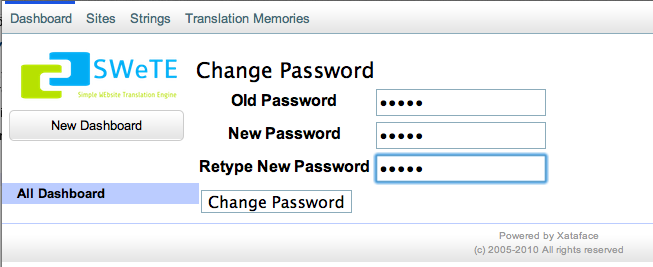
-
-
Click the Dashboard link on the top-left menu. This should take you to the dashboard as shown below:
The dashboard
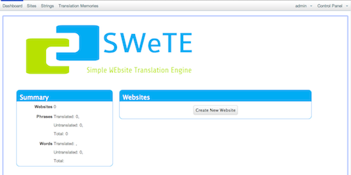
-
Click the Create New Website button in the webpages section.
The New Website Form
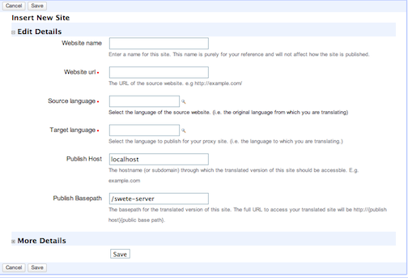
-
Fill in the New Site form as follows:
-
Enter "Wikipedia French" in the Site Name field.
-
Enter "http://en.wikipedia.org/" in the Website URL field.
-
Select "English" in the "Source Language" field.
-
Select "French" in the "Target Language" field.
-
Leave the Publish Host field as its default value.
-
Append "wikipedia-fr/" to the Publish basepath field so that it is "/path/to/swete-server/wikipedia-fr/"
-
At this point the form should appear as shown below:
New Site Form, filled in with details for our first site.
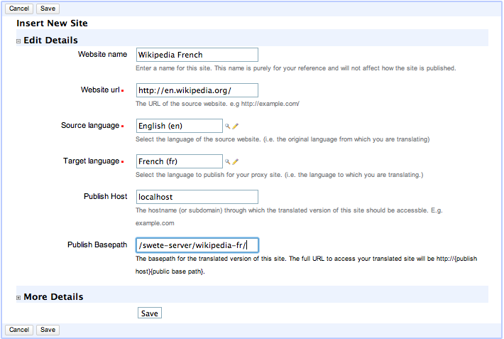
Click the Save button at the bottom of the form.
-
After saving, you should see a message that says "Record Successfully Saved", and you will be returned to the Edit form for that site you just created.
-
Testing Your Website
Now that you’ve created a website in the administration console, it is time to test it out to make sure that it works. Click on the "Dashboard" link in the top left, to return to the Dashboard. You should now see your new site listed in the Websites block as shown below:
The Websites section of the dashboard after adding Wikipedia as a proxy site.
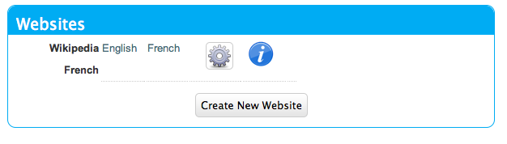
Click on the "French" link to go to our proxy site’s URL: http://yourdomain.com/swete-server/wikipedia-fr/. You should see the wikipedia homepage here exactly as it appears on the actual Wikipedia site (i.e. http://en.wikipedia.org/).
Wikipedia as viewed through the proxy url.
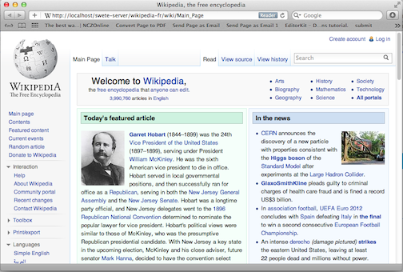
If you do not see this, then you may have some problems with either your server settings or your site settings. Some common errors include:
-
A ``404 Not Found'' Error. If you see a 404 error, then your server probably doesn’t have mod_rewrite installed or it is not configured to work with your website.
-
A blank white page. Likely there is a server error. You should check your error log to see what the error is before proceeding.
If you see the Wikipedia home page, you are ready to proceed to the next step: Translating Website Content
Translating Website Content
At this point you may be underwhelmed by the results as you now just have a proxy version of Wikipedia working at your own local address. You may be wondering why none of the content has been translated into French. SWeTE doesn’t translate website content automatically. You need to first capture the strings in the website and then either have the strings translated by a professional translator, translate them yourself, or submit them to Google to be translated by a machine. Once the strings have been translated, then SWeTE will be able to apply the translations to webpages that it displays.
In any case, the first step you must take is to capture the strings that you would like to translate.
Capturing Strings
In order to capture the strings that you would like to translate, first return to the dashboard. In the Webpages block, to the right of the "Wikipedia French" listing, you should see an "Actions" button with the following icon:
Click on this icon to reveal a contextual menu of actions you can perform on this site:
Actions contextual menu for the Wikipedia French site.
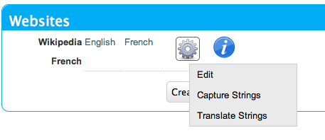
Click on the "Capture Strings" option in this menu.
This should take you to a page with a toolbar at the top, and the Wikipedia homepage at the bottom. The toolbar contains an "Exit" link, and a string that says "String capturing is currently turned off". Click the "Turn On" link to the right to turn it on.
Capturing Strings for Wikipedia
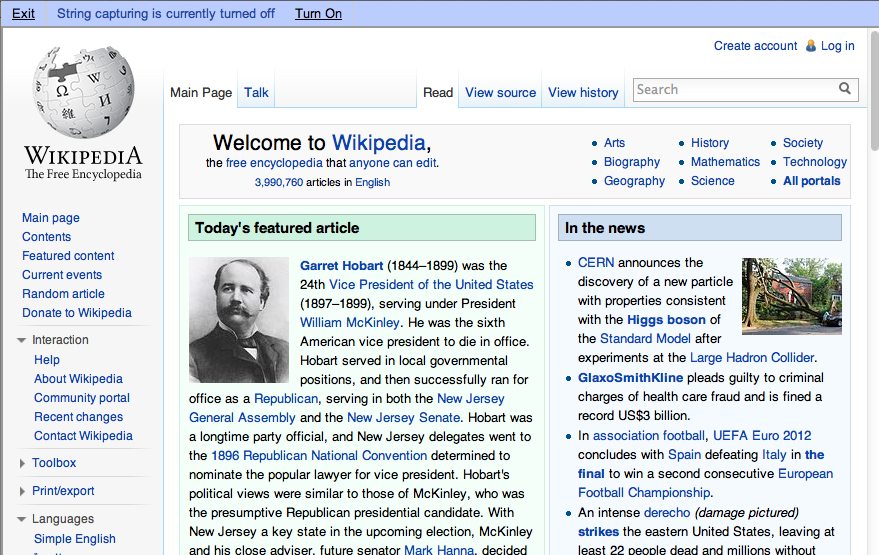
Remember to turn string capturing back off after you have finished capturing all of the strings. Capturing strings is an expensive operation as it requires quite a bit of extra processing by SWeTE so you should keep it turned off unless you are in the process of capturing strings.
Once string capturing is turned on, you can start navigating the site. Each time you load a page, the strings on it will be parsed and imported into SWeTE for translation. For now, let’s just load the homepage. Because string capturing was disabled when we first loaded it, we’ll need to reload the page. You can do this by clicking "Refresh" in your web browser to reload the page.
After you have finished refreshing the homepage, turn string capturing back off by clicking the "Turn off" link on the top toolbar. Then click "Exit" to return to the details page for our site in the administration console.
Reviewing the Captured Strings
You can view the strings that have been captured in the system at any time by clicking on the "Strings" link in the top left menu bar. This will show you all of the strings that have been captured by the system.
Strings list
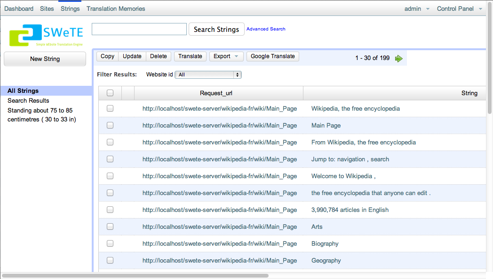
You can search this list by keyword, webpage URL, website, whether it has been translated, or by many other criteria. You can also select one or more strings from this list to translate, either manually or automatically using the Google Translation API.
Translating Strings Manually
The process for manually translating strings that have been captured is as follows:
-
Go to the "Strings" section by clicking the "Strings" link in the top left menu bar.
-
Filter the set of strings as necessary using searching and sorting to find the strings that you want to translate.
-
Check the box beside each string that you want to translate. You can check all of the currently shown strings by checking the box in the table header. Checking strings on the strings list to prepare to translate them.
-
Click the "Translate" button on the top menu bar. This will bring up a translation form that allows you to translate all of the strings that were selected. Translation Form
-
Fill in the translation form. Translations are automatically saved as you tab out of the field.
Translating Strings with the Google Translation API
SWeTE allows you to use the Google Translation API to translate strings as well. In order to activate this functionality, you must have a Google API Key. For information on obtaining a key, check out the Google Translation API FAQ. If you have a key, you can configure SWeTE to use it by doing the following:
-
Navigate to the Edit Site form for the website you want to set up. (i.e. Go to the dashboard, click the "Actions" button next to the website in the "Websites" block, and select "Edit").
Edit option of the actions menu for a website.
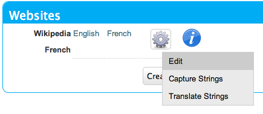
-
Expand the "More Details" section at the bottom of the form.
More options expandable heading
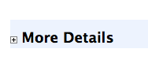
-
In the "Google API Key" field, enter your Google API key.
More details section expanded.
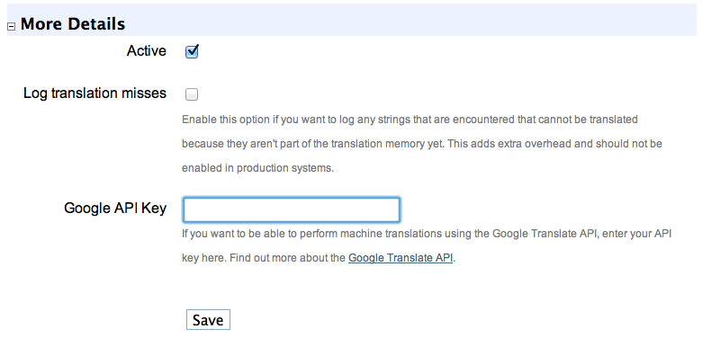
-
Click the "Save" button at the bottom of the form.
Once you have entered your key in the site profile, you can return to the "Strings" section of the application and begin to translate the strings using the Google Translation API. To continue our example site from earlier (Wikipedia), we’ll translate the strings in the first page of wikipedia as follows:
-
Click the "Strings" link on the top-left toolbar.
-
Check the box beside a few strings that we want to translate.
Checking strings on the strings list to prepare to translate them.
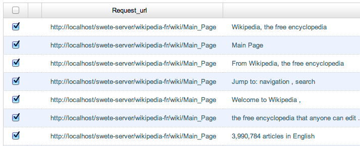
-
Click the "Google Translate" button on the top button bar. The will process for a moment and then pop up with a message saying that the translations completed. If there was a problem (e.g. invalid API key), it will let you know.
Google translate progress bar.
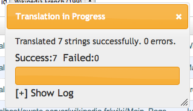
Checking The Translations
After performing some translations, you should be able to view your proxy (translated) site again, but this time you should see the translations incorporated into the page. You may recall the steps to view your site from earlier:
-
Click on "Dashboard" in the upper left menu to go to the dashboard. Then click the "French" link next to the Wikipedia site in the "Webpages" block.The Websites section of the dashboard after adding Wikipedia as a proxy site.
-
You may need to refresh your browser to see the changes as your browser may have the page cached from before it was translated.
-
You should see the Wikipedia main page translated into French using your translations.
Wikipedia after performing a few translations
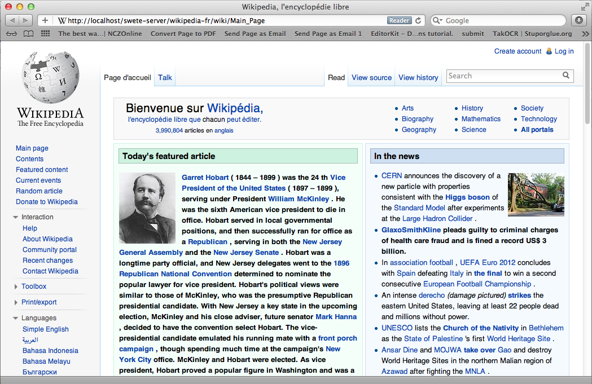
Summary
This chapter introduced SWeTE Server as a reverse-proxy that provides seamless content translation and localization. SWeTE will run on a fairly typical LAMP server stack (Linux, Apache, PHP, MySQL). It can be downloaded either as an archived, all-in-one distribution or via the subversion repository. The Subversion repository is recommended for keeping up-to-date with patches and bug fixes.
We listed many of the features of SWeTE in Features. The core functionality centers around the translation and serving of web content. It includes an advanced translation memory that can be used to import and export to many formats, including XLIFF, TMX, CSV, and XML.
The chapter also includes a step-by-step tutorial on:
-
Downloading and Installing SWeTE
-
Setting up a proxy website for Wikipedia to translate it from English to French.
-
Capturing strings from the website that need to be translated.
-
Translating strings manually.
-
Translating strings using the Google translation API.
At this point we have only scratched the surface. The remaining chapters will go through the features of SWeTE in greater depth. The initial release (0.2) is also meant to be a bare-bones starting point for development. Development is active and ongoing, and many more features are planned.
The Translation Parser
SWeTE does a pretty good job of parsing HTML content and extracting a set of phrases to be translated. In cases where the HTML markup doesn’t make structure explicit, you can add your own HTML tags and attributes to the content to help it along.
How the Translation Parser Works
A request-response cycle in SWeTE works roughly as follows:
-
Client makes an HTTP request for a page in the SWeTE proxy site.
-
SWeTE loads the equivalent page from the source web server (or from the cache if the page is cached).
-
SWeTE parses the source HTML page into a set of strings.
-
For each string in the set of strings (from step 3), SWeTE checks the translation memory to see if there is a translation available for it.
-
SWeTE replaces all strings in the HTML page with their appropriate translations if available.
-
SWeTE returns the resulting (translated) page to the client.
This chapter will focus mostly on step 3 (parsing a webpage into strings). It is possible to use SWeTE successfully without understanding much about how the parsing works, but you can achieve much better results if you know how it works, and thus, know how to manipulate it.
Block Level Elements vs Inline Elements
SWeTE’s parsing algorithm is designed to figure out how the text of a page should be partitioned into strings. By default, SWeTE will look for what it considers to be "block-level" HTML elements. It treats the text content of each "block-level" as an atomic string (phrase) for use in translation. Block-level elements include such elements as:
-
<p>tags (paragraphs) -
<div>tags -
<li>tags -
<h1>,<h2>,<h3>, etc… tags (i.e. headings)
In fact, SWeTE considers any tag that is not an "inline" tag to be a "block-level" tag. The definitive set of "inline" tags are:
<a>, <em>, <abbr>, <i>, <u>,
<b>, <span>, <strong>, <acronym>, <font>,
<sup>, <sub>
In addition, you can also explicitly specify that a tag should be treated as "inline" by adding the data-swete-inline="1" HTML attribute to it.
++
Example Parse Tree.
Consider the following snippet of HTML:
<p><a href="http://google.com">Google</a> is one of the most <em>AMAZING</em> search engines.</p>
<p>It returned the following results:</p>
<ul>
<li>Dogs</li>
<li>Cats</li>
<li>Butterflies</li>
</ul>
This would be parsed into the following strings:
-
<a href="http://google.com">Google</a> is one of the most <em>AMAZING</em> search engines.
-
It returned the following results:
-
Dogs
-
Cats
-
Butterflies
This break-down seems to follow the semantic flow of the text quite well. It keeps sentences together, and groups "inline" tags into a single string (e.g. The <a> +`and `+<em> tags in the first paragraph are just included inside the parent string rather than being partitioned into their own strings). This is largely because the HTML mark up is clean and following the semantics of the content. Well-written HTML should maintain this characteristic, but you may find exceptions where the HTML markup does not break-down well semantically.
One common HTML construct that doesn’t fare well under the default rules are menus of <a> tags. E.g., consider the following HTML menu:
<div id="menu">
<a href="home.html">Home</a> |
<a href="about.html">About</a> |
<a href="contact.html">Contact</a>
</div>
Because <a> tags are inline elements, SWeTE will parse this into a single string for translation. Semantically, though, each of the <a> tags should be treated as separate.
Note
Why does it matter whether a string is extracted out into its component parts or extracted as one big string? In both cases, they can be translated using SWeTE and it will work properly. The advantage of breaking it down into smaller pieces is that these pieces can be reused more easily. In the example menu above, if we translate the full menu as a single string then the translation can only be used to translate menus that are identical (i.e. same menu items and order exactly). However, if we were to extract the individual menu items ("Home", "About", and "Contact") separately, then these translations could be used any any other menus containing the same labels, even if the menu as a whole is different.
The difference is apparent when you place this menu into a larger context. For example, consider the following page that includes menus at the head and foot that are almost the same but have a slightly different order:
<div id="menu1">
<a href="home.html">Home</a> |
<a href="about.html">About</a> |
<a href="contact.html">Contact</a>
</div>
<div id="content">
<p>This is some page content. Ain't it great!</p>
</div>
<div id="menu2">
<a href="home.html">Home</a> |
<a href="example.html">Examples</a> |
<a href="about.html">About</a> |
<a href="contact.html">Contact</a>
</div>
When SWeTE parses this, it will produce three strings:
-
<a href="home.html">Home</a> | <a href="about.html">About</a> | <a href="contact.html">Contact</a>
-
This is some page content. Ain’t it great!
-
<a href="home.html">Home</a> | <a href="example.html">Examples</a> | <a href="about.html">About</a> | <a href="contact.html">Contact</a>
Notice that it extracts the menus as being distinct strings even though their content is largely the same. It would be much better if it just extracted the individual menu labels separately. In fact, this is how it would work if <a> tags were block-level. But SWeTE has no way of knowing that we intend for these particular tags to be block level, since, most of the time, <a> tags are just included in other content without disrupting the flow. Unless, that is, you give SWeTE a hint.
Explicitly Declaring a tag block-level (the data-swete-block attribute)
In cases, like the one above, you can specify that a tag should be treated as a block-level tag by adding the data-swete-block attribute to the tag. E.g. Consider our previous example with a header and footer menu but with the minor adjustment of adding the data-swete-block attribute to the <a> tags:
<div id="menu1">
<a href="home.html" data-swete-block="1">Home</a> |
<a href="about.html" data-swete-block="1">About</a> |
<a href="contact.html" data-swete-block="1">Contact</a>
</div>
<div id="content">
<p>This is some page content. Ain't it great!</p>
</div>
<div id="menu2">
<a href="home.html" data-swete-block="1">Home</a> |
<a href="example.html" data-swete-block="1">Examples</a> |
<a href="about.html" data-swete-block="1">About</a> |
<a href="contact.html" data-swete-block="1">Contact</a>
</div>
Now, SWeTE will parse this to the following strings for translation:
-
Home
-
About
-
Contact
-
This is some page content. Ain’t it great!
-
Examples
Much cleaner and easier to manage. Not only does this produce less translation work right now, it will reduce work later if the menus are modified further. With the previous structure (where the menus are extracted into a single string), any modification to the menu (i.e. changing order, adding/removing menu items, etc..) would result in having to retranslate the entire menu. Under this new structure, you would only need to translate those menu items that are added.
Tip
If you want to build HTML menus, it is best practice to use
<ul>or<ol>tags with<li>children rather than just using bare<a>tags. This preserves the semantic intent of the menus and will be more compatible across devices. If you were to use this strategy then you wouldn’t need to provide any special instructions for SWeTE. It would interpret each menu item as its own string by default. The HTML for this structure would look like:<div id="menu1"> <ul> <li><a href="home.html">Home</a></li> <li><a href="about.html">About</a></li> <li><a href="contact.html">Contact</a></li> </ul> </div> <div id="content"> <p>This is some page content. Ain't it great!</p> </div> <div id="menu2"> <ul> <li><a href="home.html">Home</a></li> <li><a href="example.html">Examples</a></li> <li><a href="about.html">About</a></li> <li><a href="contact.html">Contact</a></li> </ul> </div>While default browser styles would lay these
<ul>tags (unordered lists) as lists rather than horizontal menus, it is a simple matter to customize their layout using CSS to match the look of the previous menus with simple inline<a>tags.
Explicitly declaring tags "inline": the data-swete-inline attribute
There may also be cases when a tag is being treated as a "block-level" tag but you want it to be treated as an inline tag. Use the data-swete-inline attribute for this. For example, consider the following snippet:
<p>My phone number is <customtag phone="work">555-222-333</customtag> but you should email me.</p>
Since this uses a custom tag (<customtag>), SWeTE will interpret it as block-level, and will parse it into the following strings:
-
My phone number is
-
555-222-3333
-
but you should email me.
Clearly, the <customtag> is meant to be interpreted as an inline tag here, but SWeTE is interpreting it as a block-level tag (which is the default). We can rectify this by adding the data-swete-inline attribute:
<p>My phone number is <customtag phone="work" data-swete-inline="1">555-222-333</customtag> but you should email me.</p>
Then it will all be extracted into a single string:
-
My phone number is <customtag phone="work" data-swete-inline="1">555-222-333</customtag> but you should email me.
Overriding the Parser: translate & notranslate
In some cases you may want to be very explicit about what gets translated and how a document is partitioned into strings. SWeTE supports the translate and notranslate HTML attributes for this purpose. notranslate tells SWeTE not to parse anything inside of its tag. translate specifies that the contents of the tag should be treated as a single string, even if it contains sub elements. Using these attributes in tandem provides an alternative to the SWeTE parser. Indeed, in some cases you may want to mark the <body> tag with notranslate and then just explicitly mark the sections that you with to translate within the body.
For example, consider the menu with inline <a> tags from the previous section:
<div id="menu">
<a href="home.html">Home</a> |
<a href="about.html">About</a> |
<a href="contact.html">Contact</a>
</div>
As we saw before, SWeTE will parse all menu items into a single string, which is not optimal. Previously we saw a solution to this problem involving the data-swete-block attribute. You could, alternatively solve this problem using a combination of the translate and notranslate attributes as follows:
<div id="menu" notranslate="1">
<a href="home.html" translate="1">Home</a> |
<a href="about.html" translate="1">About</a> |
<a href="contact.html" translate="1">Contact</a>
</div>
This instructs SWeTE to "not translate" anything inside the "menu" div. It then further instructs SWeTE to translate the specific individual <a> tag contents. SWeTE will parse this into the following strings:
-
Home
-
About
-
Contact
Note
The translate and notranslate attributes should not be confused with the data-swete-translate attribute. Both translate and notranslate will cause their tag to be treated as block-level. You should not use notranslate in an inline tag, or you’ll experience unintended results. You should use the data-swete-translate="0" attribute for inline content that you want to exempt from translation.
String Equivalence
After SWeTE parses the strings out of an HTML page, it checks the translation memory for the site to see if there are any translations for the extracted strings. It will only use a translation if the string is an exact match. However it does have a hashing algorithm for string equivalence that factors out HTML tags, and variables (inline sections that should either be translated or not depending on the type of variable). This allows for maximum translation reuse without the possibility for incorrect translations bleeding into the output.
According to SWeTE’s hashing algorithm, the following strings are equivalent:
-
Hello my name is <a href="mailto:steve@example.com">Steve</a>.
-
Hello my name is <span style="color:blue">Steve</span>.
-
Hello my name is <x>Steve</x>.
But these are not the same as:
-
Hello my name is Steve.
-
Hello my name is <span>Steve</span>
-
hello my name is <span>Steve</span>.
-
Hello my name <span>is Steve</span>.
The reason why these last 3 are not equivalent to the first three or to each other is that they are missing key elements. The first one is missing the HTML tag, so it will be recognized as a distinct string. The second one is missing the trailing punctuation point. And the third one has a lower case "h" in "hello" rather than the upper case version in the previous three. And the last one has the span tag around "is Steve" instead of just "Steve".
This example shows the following rules of string equivalence:
-
Punctuation matters
-
Strings are case-sensitive
-
Different HTML tags with the same placement have no effect string equivalence. I.e. It doesn’t matter what the tag is or what attributes are in the tag. All that matters is where the tag is located within the String.
The following page has 3 strings, but since they are all equivalent unders SWeTE’s string equivalence rules, it will only store the first one in the translation memory.
<!doctype html>
<html>
<body>
<ul>
<li>Hello my name is <span>Steve</span></li>
<li>Hello my name is <a href="home.html">Steve</a></li>
<li>Hello my name is <name data-swete-inline="1">Steve</name></li>
</ul>
</body>
</html>
Hence if we capture strings on this page, then look at the "Strings" tab in SWeTE we would only see the first string pulled in:
"Hello my name is <span>Steve</span>"
If we then translate this string into French using the translation form, e.g. using the following translation:
"Bonjour mon nom est <span>Steve</span>",
Then SWeTE would translate the page as follows:
<!doctype html>
<html>
<body>
<ul>
<li>Bonjour mon nom est <span>Steve</span></li>
<li>Bonjour mon nom est <a href="home.html">Steve</a></li>
<li>Bonjour mon nom est <name data-swete-inline="1">Steve</name></li>
</ul>
</body>
</html>
Notice that SWeTe preserved the tags. (i.e. even though the translation memory only contained a translation for the <span> tag version, it presered the <a> and <name> tags properly on translation).
Inline Variables (using data-swete-translate)
Many web applications use server-side technologies and templates to generate large numbers of web pages that use the same format, but have different data. For example, most sites that include a login mechanism will have some sort of status message like:
"You are logged in as Steve"
By default, SWeTE will probably import all of these strings separately so that your translation memory will be full of strings like:
-
You are logged in as Steve
-
You are logged in as Mary
-
You are logged in as Anne
etc…
This is not maintainable. It would be better if you could provide a translation for the string structure once, and then let SWeTE fill in the names afterwards. In fact, you can mark a section of a string as a "variable" using the data-swete-translate attribute. E.g. If you modify the output so that it says:
You are logged in as <span data-swete-translate="0">Steve</span>
Then SWeTE will be be able to store the string once, and apply it to all different name variations.
The following strings are equivalent for SWeTE:
-
You are logged in as <span data-swete-translate="0">Steve</span>
-
You are logged in as <span data-swete-translate="0">Mary</span>
-
You are logged in as <span data-swete-translate="0">Anne</span>
The following page has 3 strings, but since they are all equivalent unders SWeTE’s string equivalence rules, it will only store the first one in the translation memory. The equivalence relies on the use of the data-swete-translate directive to mark a section as an inline variable.
<!doctype html>
<html>
<body>
<ul>
<li>Hello my name is <span data-swete-translate="0">Steve</span></li>
<li>Hello my name is <span data-swete-translate="0">Mary</span></li>
<li>Hello my name is <span data-swete-translate="0">Anne</span></li>
</ul>
</body>
</html>
Hence if we capture strings on this page, then look at the "Strings" tab in SWeTE we would only see the first string pulled in:
"Hello my name is <span data-swete-translate="0">Steve</span>"
If we then translate this string into French using the translation form, e.g. using the following translation:
"Bonjour mon nom est <span data-swete-translate="0">Steve</span>",
Then SWeTE would translate the page as follows:
<!doctype html>
<html>
<body>
<ul>
<li>Bonjour mon nom est <span data-swete-translate="0">Steve</span></li>
<li>Bonjour mon nom est <span data-swete-translate="0">Mary</span></li>
<li>Bonjour mon nom est <span data-swete-translate="0">Anne</span></li>
</ul>
</body>
</html>
Effective use of inline variables is critical for the effective internationalization of dynamic websites. It can reduce the number of strings that need to be translated by several orders of magnitude. It may be the difference between a translation being trivial and intractable.
Dealing with inline Numbers
When translating strings that have a mixture of words and numbers, it is desirable to be able to reuse similar translations. E.g. Consider the strings:
-
I have 2 dogs and 3 cats.
-
I have 4 dogs and 100 cats.
These strings are identical at a core level so it would be nice if we could just translate the structure of the string (i.e. "I have x dogs and y cats") and have the translation applied to all variations. SWeTE doesn’t inherently factor out numbers from strings when it comes to equivalency. The two strings above are not actually equal in the eyes of the translation parser. However SWeTE makes use of a pre-processing text filter to wrap all numbers in span tags with the data-swete-translate="0" attribute so that similar strings can be treated as equivalent.
The way this works is:
-
SWeTE loads the source page from the source website.
-
SWeTE performs pattern matching and replacement on the page content to wrap all numbers (in text nodes) with <span data-swete-translate="0"> tags.
-
The translation parser parses the modified content.
Consider the following snippet from a web page:
<p>I have 2 dogs and 3 cats.</p> <p>I have 4 dogs and 100 cats.</p>
When SWeTE first loads the snippet from the source server, it will apply the text filter and convert this to:
<p>I have <span data-swete-translate="0">2</span> dogs and\ <span data-swete-translate="0">3</span> cats.</p> <p>I have <span data-swete-translate="0">4</span> dogs and\ <span data-swete-translate="0">100</span> cats.</p>
(Note, the content is wrapped for readability). Now all of the numbers have been transformed in to inline variables so that when this page is parsed by the translation parser, only one string will be extracted, since both paragraphs are now deemed to be equivalent.
Tip
Text filters can be used to do much more than just convert numbers into inline variables. They can be used to recognize dates, currency, and just about any other pattern that can be matched by a regular expression. SWeTE includes a set of default text filters (e.g. for numbers and dates) that are applied to every site automatically, but you can easily add your own filters as well to help pre-process webpage content before it is parsed by the translation parser. Read more about text filters in chapter ??.
Dealing with Dates and Times
Many applications make use of date and time in such a way that it is not practical to have a translator explicitly translate every instance. Luckily, computers can do a fine job of translating dates and times to different formats and languages. In order to allow computers to perform date translation automatically, it needs some cues from the web page to let it know where a date occurs, what format it is in (for processing purposes), and what format it should be converted to (for translation purposes). There are two HTML attributes that are supported for this purpose:
-
+data-date-format +: Specifies the format that the date is in using ICU date format notation. -
data-date-format-target: Specifies the format that the date should be converted to in ICU date format notation. If this is omitted, then the format specified by the data-date-format attribute is used.
SWeTE includes a small selection of text filters to automatically wrap any detected dates in <span
data-date-format> tags so that the translation processor will correctly translate the dates.
Note
You must set the source date locale and target date locale settings for the site in order for date translation to work properly. You also need to have the PHP intl extension installed. It is included with PHP by default since 5.3, but it still needs to be set in the configure flags when building PHP for it to be included.
Warning
Setting the source and target date locales currently depends on way of obtaining the available locales in the system which may not be available on Windows servers. As of 0.2.3, this has not been tested on Windows servers so there is a good chance it may not work.
The built-in date text filters only recognize a few common date formats. It is a good idea to modify these text filters, or create your own filters to cater to the date formats that are used in your application.
The following snippet shows how the data-date-format tags work.
<p>Today's date is
<span data-date-format="MMMM d, y">
September 9, 2008
</span>
</p>
In this case the data-date-format tag is set to "MMMM d, y" which is ICU date format for "<full month name> <day of month>, 4 digit year". The output after SWeTE parses this snippet (assuming the source date format of the site is set to en_CA and the target date format is fr_CA) would be:
<p>Today's date is
<span data-swete-translate="0" data-date-format="MMMM d, y">
septembre 9, 2008
</span>
</p>para
Note, that the format specified in data-date-format must match exactly the format of the date string provided inside the tag or parsing will fail and the date will not be converted. Also notice that the data-swete-translate="0" attribute is automatically added to this tag to convert it to an inline variable. That way we can translate the string "Today’s date is xxx" once in the translation memory and have it apply to all possible dates.
There is still a problem with this date conversion. "septembre 9, 2008" is not the normal way that a date is formatted in French. The month name has been translated, but French native speakers would expect the date in the form "9 septembre 2008". Hence we need to specify a different output format string than for input format. We’ll add the data-date-format-target attribute as follows:
<p>Today's date is
<span data-date-format="MMMM d, y"
data-date-format-target="d MMMM y">
September 9, 2008
</span>
</p>
And the output would become:
<p>Today's date is
<span data-date-format="MMMM d, y"
data-date-format-target="d MMMM y"
data-swete-translate="0">
9 septembre 2008
</span>
</p>
Enabling Date Conversion
Date conversion, in SWeTE, requires the PHP Intl extension to be installed. And even if it is installed date conversion will not happen automatically until you configure the source date locale and target date locale for the site. You can set these properties either during the creation of a new site or after creation using the site’s Edit form.
Configure the date locales for an existing site as follows:
-
Log into the SWeTE administration panel. (i.e. http://example.com/path-to-swete/swete-admin/index.php)
-
Click on the "Dashboard" link in the upper right.
-
Inside the "Websites" portlet, click on the "Menu" icon to the right of your site.

-
Select "Edit" in the contextual menu.

-
On the edit form, click the "More Details…" subheading at the bottom of the form to reveal the advanced options. This will reveal two select lists that will allow you to select the locales to use for parsing and formatting dates.

-
Click "Save"
At this point, SWeTE should properly convert dates that have been marked with the data-date-format and data-date-format-target attributes.
Automatic Date Wrapping
Wrapping dates explicitly in your source HTML may be cumbersome, or not even possible if you don’t have access to change the source HTML. A better way to handle dates is to implement text filters to automatically wrap all dates in the appropriate tags prior to translation.
Text filters are regular expressions that are applied to the source HTML in the preprocessing step (i.e. before SWeTE parses the page for translation). SWeTE comes with a small set of default text filters that wrap such things as numbers, month names, days of week, and a small set of date formats. It is recommended that you take stock of the date formats that appear in your site, and set up explicit text filters for those formats.
Browsing a Site’s Text Filters
You can see your site’s text filters by:
-
Clicking on "Sites" in the top menu bar.
-
Click on your site in the list to access the site details.
-
Click on the "Text Filters" sub-tab under your site’s details.

You’ll notice a list of default text filters that are applied to every page before it is parsed. Most of these filters have to do with date in some capacity. The filter_order column specifies the order in which a filter is applied. Generally we want the most specific filters to be applied first. E.g. We would want filters that recognize a full date like "September 2, 2002" to be applied before a filter for month names or numbers, because if the month is converted first, it would change the date to a form that the date filter wouldn’t recognize.
Anatomy of a Filter
Click on the "English Dates with Full Month Names" filter to see how this filter is set up.

The key to this lies in the "Pattern" and "Replacement" field. The pattern is a PERL compatible regular expression. Notice that it begins and ends in a '/' character. In this case it is set up to explicitly look for dates of the form "MonthName day, year". The replacement field is the text that matching strings should be replaced with. Just like PHP’s preg_replace() function, this accepts callback variables to include portions of the original string in the output.
You’ll notice that this particular pattern would convert strings like:
September 9, 2008
to
<span data-swete-translate="0"
data-date-format="MMMM d,y">September 9,
2008</span>
Hence, with this filter activated in the site (which it is by default) all dates of this form will automatically be converted to the target language’s equivalent.
Summary
In this chapter, we discussed the SWeTE translation parser and showed how it can be manipulated to partition content in the ways of our choosing. We also discussed string equivalence and introduced some strategies for minimizing the number of unique strings that are required to be held by our translation memories (e.g. using inline variables and automatic date formatting).
Using a combination of source content design (i.e. adding SWeTE meta tags directly into your source content), preprocessing, and post-processing it should be possible to efficiently manage the internationalization and translation of the most complex web application.
Using the REST Translation API
As of version 0.3, SWeTE now includes a REST (Representational State Transfer) web service API for translating strings. Using this API, you can pass HTML or plain text content to SWeTE over HTTP and retrieve translated versions of the content as output.
Enabling the REST API
Before you can start using the REST API for a website, you’ll need to create a secret web-service key for the site in the site profile. This key will be used by your REST clients as a sort of password to access the API.
The steps are as follows:
-
Log into your SWeTE instance’s administration console (e.g. http://example.com/swete-admin/index.php).
-
From the "Dashboard", click on the "Tools" icon
next to the site you want to activate, then select "Edit" from the contextual menu.
-
Click the "More Details" section header to see the advanced options on the edit form. This should reveal some additional fields including "Webservice secret key".
-
Enter a phrase into this field. It may contain letters, numbers, punctuation, or special characters, and it can be up to 255 characters in length.
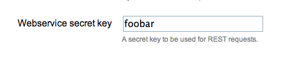
-
Click "Save"
Using the REST API
Once you have activated the REST API for a site, you should be able to send HTTP requests to the service with strings that you wish to translate. The HTTP requests should be POST requests to a URL in the proxy site with the following POST parameters:
| Key | Description |
|---|---|
swete:input |
The content that you wish to have translated. This may be an HTML page, an HTML fragment, or plain text. |
swete:content-type |
The type of the content provided in swete:input. Default is |
swete:salt |
A seed unix time stamp (i.e. number of seconds since epoch). This should reflect the time that the request was initiated. If this timestamp is more than 1 hour different than the server’s time, then the request will be denied. |
swete:key |
This should be a SHA1 hash of the concatenation of the swete:salt parameter and your web site’s secret web service key. The format of this key should match the output of thehttp://php.net/manual/en/function.sha1.php[PHP’s |
Output and Error Handling
There are three possible outputs for the REST API:
-
The translated content. If SWeTE’s translation memory contains translations for the input string, then the output will simply be a translated version of the input string. It will not be contained in a data structure of any kind. It will just be a plain string.
-
The original content. If the translation memory doesn’t contain any matching translations for the input content, then it is possible that the API will simply return the same content that was passed to it. It will not be contained in a data structure of any kind. It will just be a plain string.
-
An error message. If there are any errors (e.g. incorrect key, expired or invalid salt, etc..), then it will output the error message as a single string, preceded by the string
[ERROR].I.e. All errors will be returned in the format:[ERROR] Error Messagee.g.
[ERROR] Incorrect Key
Sample PHP Client
Below is a sample PHP client that is set to use the REST API:
<?php
/**
* @param string $content The content to be translated.
*
* @param string $url The URL of the SWeTE proxy site.
* Can be any URL in the proxy but will be treated
* as the Base HREF for the page content.
*
* @param string $password The webservice secret key.
* Should match the value of the webservice_secret_key
* field of the website in SWeTE.
*
* @returns string Translated version of $content.
*/
function translateContent($content, $url, $password, $contentType='text/html'){
// Salt should be current time (unix timestamp).
$salt = time();
// Key should be sha1 hash of salt concatenated with password
$key = sha1($salt.$password);
// POST parameters to pass to the web service
$data = array(
'swete:input' => $content,
'swete:salt' => $salt,
'swete:key' => $key,
'swete:content-type' => $contentType
);
// use key 'http' even if you send the request to https://...
$options = array(
'http' => array(
'header' => "Content-type: application/x-www-form-urlencoded\r\n",
'method' => 'POST',
'content' => http_build_query($data),
)
);
$context = stream_context_create($options);
$result = file_get_contents($url, false, $context);
return $result;
}
function translatePlainText($text, $url, $password){
return translateContent($text, $url, $password, 'text/plain');
}
function translateHtml($html, $url, $password){
return translateContent($html, $url, $password, 'text/html');
}
This client is very simple. It creates a POST request and sends it to a SWeTE proxy site. Let’s take a moment to go through this example so that it is clear what is happening.
-
It begins by getting the current time in seconds. This will be used for the
swete:saltparameter, and for building theswete:keyparameter.Warning
Make sure that your salt represents the number of seconds since epoch and not some other figure. Many languages provide "current time" functions that return milliseconds. If you provide a salt that is in milliseconds, the request will fail.
-
Next it creates a key (to be used as the
swete:keyparameter) by concatenating the salt with the password.Note
In this example the
$passwordparameter is expected to match the web service secret key value that was entered into the site profile in SWeTE. -
Next it creates the payload by placing all of the relevant parameters into an associative array.
-
When the actual HTTP request is made, it is a POST request. GET requests will be completely ignored.
This example client is written in PHP, but you could write a client in any language (e.g. Python, Ruby, Java, C#, C, etc…) that allows you to make HTTP requests.
Example usage of PHP Client
The following snippet shows a couple of simple examples of using the PHP client that we created above. The first usage translates an HTML snippet. The second translates some plain text content:
$result = translateContent(
<<<END
<h3>Hello World</h3>
<p>Hello, my name is <span data-swete-translate="0">Steve Hannah</span>.
The <span data-swete-translate="1">Blue Jays</span> are my favourite team.
</p>
END
,
'http://example.com/demosite4/index.html',
'foobar'
);
echo "First Result:\n";
echo $result;
$result2 = translatePlainText(
'Hello World',
'http://test.swetedemo.weblite.ca/demosite4/index.html',
'foobar'
);
echo "\r\n\r\nSecond Result:\n";
echo $result2;
// Try a request with an incorrect key.
$errorResult = translatePlainText(
'Hello World',
'http://test.swetedemo.weblite.ca/demosite4/index.html',
'foobarxyz'
);
echo "\r\n\r\nThird Result:\n";
echo $errorResult;
The output of this snippet would be as follows:
First Result:
<!DOCTYPE html PUBLIC "-//W3C//DTD HTML 4.0 Transitional//EN"
"http://www.w3.org/TR/REC-html40/loose.dtd">
<html>
<body class=" x-swete-translation-fr">
<h3>Bonjour Monde</h3>
<p>Bonjour, mon nom est
<span data-swete-translate="0">Steve Hannah</span> .
Les <span data-swete-translate="1">Blue Jays</span>
sont mon equippe favorite.
</p>
</body>
</html>
Second Result:
Bonjour Monde
Third Result:
[Error] Incorrect Key
Note
Some of the HTML formatting has been changed to fit the page better in print mode, but the document structure is accurate.
One important thing to notice here is that <!doctype> and <html> tags have been added to the HTML output, even though the input was just a snippet. Keep this in mind as you may need to parse out just the body of the response if you want to to match the content exactly.
How It Works
REST requests are processed by SWeTE in exactly the same way that regular web requests are processed. The only difference is that the content to be translated is fetched from the POST parameters instead of making a background request to the equivalent page on the source site. This means that the content provided in a REST request goes through all of the same preprocessing steps that standard content goes through. It also means that string capturing works exactly the same way. I.e. if you have "log translation misses" enabled in the site configuration, then you perform a REST API request with some content that hasn’t yet been translated, then the untranslated strings will be added to the translation miss log and appear under the "strings" tab to be translated.
Preprocessing Content
Generally, SWeTE will do a pretty good job of parsing and translating website content out of the box. Sometimes, however, you may feel the need to make changes to the page content to help make it easier to deal with. Some examples of such situations include:
-
Tagging content. Some strings may include both static and dynamic parts. You may want to explicitly mark the dynamic parts using
<span data-swete-translate="0">tags so that you only need to translate the static string once, or add `+notranslate="1" +`to some sections to prevent translation altogether. -
Fixing malformed HTML. Many web sites include invalid HTML that SWeTE is having problems parsing. When you spot this type of problem, you may want to fix the HTML using standard pattern matching before the content is parsed by the SWeTE DOM parser.
-
Modifying the headers. In some cases you may want to add, remove, or modify headers before they are processed by SWeTE.
++
There are three ways to modify input content to make it more amenable to SWeTE’s preferences:
-
Make changes to the source site. From a performance and maintenance perspective this is the best option as it doesn’t require any changes to SWeTE itself. An example of this type of change is if you wanted a section to be marked as "do not translate", you can just add a
notranslate="1"parameter to the tag in the source content. Performance hit: ZERO. -
Text Filters. SWeTE allows you to add text filters which are regular expressions for replacing certain patterns. All sites come with a set of default filters (e.g. for wrapping numeric values in
<span data-swete-translate="0">and dates), but you can create your own filters as well to modify almost anything. You should try not to create too many text filters because each text node in a document is compared to every filter once per request. I.e. For each new filter, SWeTE may need to perform hundreds of regular expression comparisons per request. Performance hit: Moderate.See ??? for more information about text filters.
-
PHP Event Handlers. SWeTE allows you to define a delegate class for each site where you can implement functions that will be called at various stages of the request-response cycle.
This chapter focuses on the last option: PHP Event Handlers.
The Site Delegate Class
SWeTE allows you to define a delegate class corresponding to each site in the SWeTE instance. This delegate class can contain the following methods:
-
fixHtml(string $html) : string. A method that takes the string content of a webpage as it has been received from the source site, and is expected to return string content that has been modified (or not modified) and ready to pass to the DOM parser. -
preprocess(DOMDocument $document) : void. A method that takes the DOMDocument as parsed from the source web page content and is expected to use the PHP DOM methods to make changes to the document as required for your site’s purposes. -
preprocessHeaders(array &$headers) : void. A method that allows you to process/modify the headers that have been retrieved from the source site. It takes a reference to an array of HTTP headers (strings) which can then be modified.
Using these three hooks, you should be able to arbitrarily modify the input content to suit your purposes.
Creating the Delegate Class
SWeTE uses a file path convention for finding the delegate class for each site. It expects to find your site’s delegate class named sites_<site_id>_Delegate at:
swete-admin/sites/<site_id>/Delegate.php
Where <site_id> is the Site ID of your the web site profile in SWeTE.
Tip
You can find the Site ID for a site by clicking on the "Sites" tab in the top menu. The Site ID will be located in the column labelled "Website ID" in the list of sites in your system.
E.g. If your website has site ID 428, then your Delegate class would be named sites_428_Delegate and would be located at:
swete-admin/sites/428/Delegate.php
A minimal delegate class without any methods defined would look like:
<?php
class sites_428_Delegate {
}
but a more complete Delegate class, with preprocessing methods implemented might look something like:
<?php
class sites_429_Delegate {
/**
* Called before page is processed. Fixes HTML.
*/
function fixHtml($html){
$html = preg_replace(
'/Logged in as <b>([^<]*)<\/b>/',
'Logged in as <span data-swete-translate="0" '.
'style="font-weight:bold">$1</span>',
$html
);
return $html;
}
/**
* Preprocesses HTTP headers before they are handled by SWeTE.
*/
function preprocessHeaders(&$headers){
foreach ( $headers as $k=>$h ){
// WARNING: This rule is ONLY FOR DEVELOPMENT MODE
// When we go live we should remove this rule and
// make the proxy so that it will work properly with
// HTTPS
$headers[$k] = preg_replace(
'#https://www.example.com.com#',
'http://www.example.com',
$h
);
}
}
/**
* Preprocesses the DOM before it is run through SWeTE's
* processor for translation and proxification.
*/
function preprocess(DOMDocument $dom){
// We don't need to translate building locations
$xpath = new DOMXPath($dom);
$buildLocations = $xpath->query(
"//select[@id='buildLocations']/option[@value!='']"
);
foreach ($buildLocations as $o){
$o->setAttribute('notranslate','1');
}
// We don't need to translate employee names that appear
// in the employee dropdown
$employees = $xpath->query(
"//select[@id='employee']/option[@value!='']"
);
foreach ( $employees as $o ){
$o->setAttribute('notranslate','1');
}
// The product list page includes a p-id div for each
// product that is hidden. There is no need to translate this
$pids = $xpath->query("//div[@id='p-id']");
foreach ($pids as $pid){
$pid->setAttribute('notranslate', '1');
}
// Order Review Page
$shippingAddresses = $xpath->query(
"//td[@class='CheckoutReviewShipTo']"
);
foreach ( $shippingAddresses as $a ){
$a->setAttribute('notranslate', '1');
}
$billToTable = $xpath->query("//table[@id='BillToTable']");
foreach ( $billToTable as $b){
$b->setAttribute('notranslate', '1');
$heading = $xpath->query('//h6', $b);
foreach ($heading as $h){
$h->setAttribute('translate', '1');
}
}
// Order Confirmation Page
$shipTo = $xpath->query("//td[@id='customerinforight']");
foreach ( $shipTo as $s){
$s->setAttribute('notranslate', '1');
// still translate the heading
$bs = $xpath->query('//b', $s);
foreach ($bs as $b){
$b->setAttribute('translate', '1');
}
}
}
}
Processing Order
A typical SWeTE HTTP request is processed as follows:
-
Client makes HTTP request for the proxy site (i.e. the SWeTE translated site).
-
SWeTE performs background HTTP request for associated content in the source site.
-
SWeTE preprocesses the content received from the source site:
-
SWeTE calls
fixHtml()of the delegate class to fix any problematic HTML and provide an opportunity to perform pattern matching and replacement as desired. -
SWeTE parses the fixed HTML into a
DOMDocumenttree. -
SWeTE calls the delegate class' preprocess() method on the parsed
DOMDocumentto give it an opportunity to modify the document structure as desired. -
SWeTE performs the site’s text filters on all of the text nodes (except style and script nodes) in the
DOMDocument. (e.g. to wrap numbers and dates in the appropriate tags).
-
-
SWeTE proxifies and translates the content.
-
SWeTE calls the preprocessHeaders() method of the delegate class on the response headers that were received from the source site to give it an opportunity to make changes as desired.
-
SWeTE proxifies the response headers (e.g. to convert
Locationheaders to point to the proxy site instead of the source site). -
SWeTE outputs the final content back to the client.
Translation Management
One of the most difficult aspects of managing a multilingual web site is managing the translation of the content. This includes such activities as:
-
Monitoring the source site for changes that require translation or retranslation.
-
Providing access to people who are qualified to translate the content.
-
Translating the content.
-
Approving the translated content.
-
Publishing the translated content on the live site.
SWeTE provides several features that can help to make these activities painless (or at least less painful than they would normally be). Some of these include:
-
A web-based translation form for editing translations directly inside SWeTE.
-
Importing and exporting translations to CSV and XLIFF format, so that other computer assisted translation (CAT) tools can be used to perform the translations.
-
Google translation support.
-
Translation "miss" logging to easily track when new strings are added that require translation.
-
RSS support to be notified when strings are added to the translation miss log.
-
Pluggable translation memories allow you to easily copy translations from one site to another.
This chapter presents some of SWeTE’s translation management features and suggests some strategies managing translations in different types of web sites and applications.
Translation Memories
One of the most fundamental concepts in SWeTE is the translation memory. A translation memory is just a dictionary that maps strings in one language to the equivalent string in another language. A translation memory may include more than one translation for a string, but only one of those translations can be active at a time. When SWeTE processes web requests, it parses out all of the strings in the page and compares them to the site’s translation memory. If it finds any matching translations, it replaces the original string with its translation, and then outputs the page to the client.
SWeTE assigns one translation memory per website. It is possible to share the same translation memory between two websites as long as those websites have the same source and target languages. Future versions of SWeTE may add the ability to use more than one translation memory in a single site (e.g. different translation memory for different pages), but currently (as of version 0.3) you are limited to a single translation memory. This should be sufficient for most websites.
Browsing Translation Memories
You can see the available translation memories in your SWeTE instance by clicking on the "Translation Memories" link in the top menu bar. This will bring you to a list of translation memories in the system. Typically there will be one translation memory for each website you have.
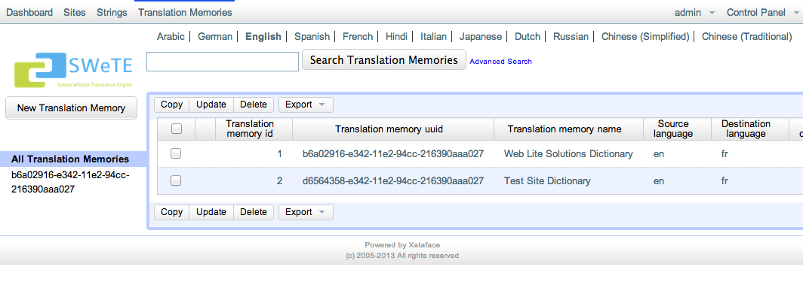
You can see more details about an individual translation memory by clicking on any of the text in its row.
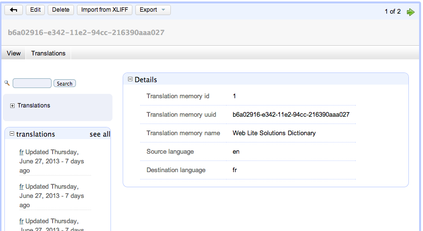
Some of the key properties of a translation memory include:
-
Translation memory uuid. This is a globally unique ID for the translation memory so that you can keep translation memories in separate SWeTE installations in sync. This is used mostly for exporting and importing so that you can be sure that you are inserting translations into the correct memory.
-
Translation memory name. A user-friendly name for the translation memory. Typically this will be named
<Website Name> Dictionary, but you can change it to anything you like. -
Source language. The language of the source web site. (i.e. the language from which we are translating).
-
Target language. The language of the translated web site. (i.e. the language to which we are translating).
You can also view the current translations in a translation memory by clicking on the "Translations" tab under the translation memory heading.
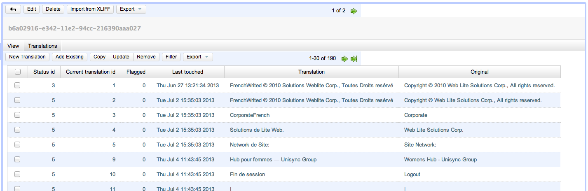
Note
Only strings that have been translated appear in the "Translations" tab of a translation memory. This is different than what you see in the global "Strings" tab which, essentially, shows the translation miss log.
The Translation Miss Log (i.e. the "Strings" Tab)
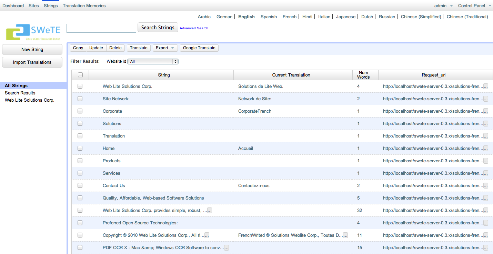
The "Strings" tab of SWeTE shows all of the strings that have been loaded into the system. This table is sometimes referred to as the "Translation Miss Log" because the primary way that strings are loaded into it is by SWeTE inserting strings for which it cannot find a translation during its web page translation cycle. Over time it became apparent that this "log" was very useful for being able to manage strings in the system, so the tab label was changed to "Strings". Some of the useful activities that can be performed in this tab include:
-
Searching/filtering and sorting strings based on keywords, dates entered, web sites, web page URLs (from which the string was loaded), and translation memories.
-
Exporting strings to CSV or XLIFF format so that they can be sent to a translator for translation.
-
Importing strings from a CSV file (and possibly other formats in the future).
-
Translating groups of strings in SWeTE’s web-based translation form.
The translation miss log is insulated from the actual translation memories. If you delete a string from the log, it won’t have any effect on the string’s translation, which is stored inside a translation memory. In fact you can delete the entire translation miss log table (i.e. every record in the "Strings" tab), and your proxy site will still function perfectly.
Searching and Sorting the "Strings" Tab
The "Strings" tab provides you with a lot of power when it comes to searching and sorting the strings. This is very important for large web applications as you could be dealing with hundreds of thousands or even millions of strings. Some common things you may want to do include:
-
Find strings that haven’t been translated.
-
Find strings that have been inserted in a particular date range (e.g. strings inserted since last Wednesday).
-
Find strings that were imported from a particular URL.
-
Find strings the contain certain keywords.
-
Find strings that have a particular number of words.
Once you have found a set of strings, you can decide to export them, translate them manually, or translate them using the Google translation API.
Keyword Searches
The easiest type of search you can perform in the Strings tab is a keyword search. This type of search is performed by entering a keyword or phrase into the "Search" box at the top of the page, and clicking "Search".
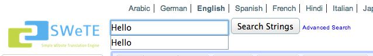
This will match all rows for which every key word in the search phrase exists in at least one column of the row. E.g. Consider a row in the "Strings" tab with the following field values:
String |
Hello |
Translation |
Bonjour |
Request URL |
A keyword search for "Hello" would match this row, as would a search for "Bonjour", or a search for "home". In addition it would be matched by "Hello Bonjour", "Hello home" and "jour home".
Single-Column Searches
In some cases, you may want to limit your search to particular columns of the "Strings" tab. SWeTE supports column searches either by clicking the "Advanced Search" link next to the top "Search Strings" button, or by revealing the search fields in the table header, which is usually quicker and easier than using the advanced search form.
You can reveal the search fields in the table header by clicking the background of any cell in the table heading row.
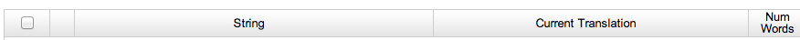
Note
Make sure to click the background of the header row and not on the label text. If you click on the label, it will sort the table on that column instead of revealing the search fields.
After clicking on the header row background, you should see a row of search fields appear just below the heading:
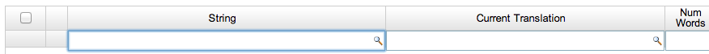
To filter the results based on keywords in a particular column, just enter the phrase in the appropriate search field and hit "Enter". E.g. If you type "Hello" into the search field in the "String column, it will filter the results to only show those rows for which the source string contains "Hello". I.e. it would match "Hello World", "Dhello", etc.., but would not match "hello" or "ello".
Multi-word Searches
It is worth noting that search phrases comprised of multiple words do not require that the content contains the exact ordering of the words. E.g. If you searched the "String" column for the phrase "Hello World", it would match any of "Hello World", "World Hello", "This is Hello World time", or "The World of Hellos". I.e. it isn’t strict about order. It just demands that each of the words in the search phrase occurs in the content.
Exact Matches Only
By default, single-column searches don’t require exact matching. Rows only need contain the individual words of the search phrase in order to included in the found set. E.g. A search in the "Strings" column for "dogs" would match "dogs", "brown dogs", or "the dogsled". You can force exact matching by prepending an "=" to the search phrase. E.g. Searching for "=dogs" would only match "dogs", and not "brown dogs" nor "the dogsled".
Finding "Empty" Columns
A special case of exact matching that is very frequently needed is a search for "empty". E.g. if you wanted to find all strings for which there is no translation, you might perform a single-column search in the "Current Translation" field for "=". This means that you want to match all rows for which the current translation is nothing.
Range Searches
SWeTE also supports range searches which are especially helpful for columns contain numerical or date data.
To match rows whose value in a row is "less than" the search term, you would prefix the search term with a "<". E.g. To find all strings that have less than 10 words, you could search in the "Num Words" field for "<10".
Similarly, to match rows whose value is "greater than" the search term, you would prefix ">". SWeTE also supports "less-than-or-equal" and "greater-than-or-equal" searches using the "⇐" and ">=" prefixes respectively.
Finally, SWeTE supports full range searches (i.e. matches values between a lower and upper bound) using the "<lower bound>..<upper bound>" notation. E.g. To find all strings that have more than 10 words and fewer than 100 words, you could search the "Num Words" field with "10..100".
Pattern Matching Searches
If the default matching behaviour is not precise enough for you, and exact matching is too specific, you may find SWeTE’s pattern matching search to be useful. If you prefix a search phrase with "~", it will be treated as an exact search, except that it will support wild cards as part of the search. E.g. You could search the "String" field for "~A%" to find all rows for which the string Starts with A. This would match "Ape", "Are we there yet", "Abcdefg…", etc.. A search for "~A%B" would match all strings that begin with A and end with B. This would match things like "About to end B", "AB", and "A O B", but would not match "The A of B" or "Car ABC".
The above examples demonstrate the use of the '%' wildcard to match 0 or more characters. It also supports the '?' wildcard to match a single character only. E.g. a search for '~A?B' would match "ACB", but not "ACCB".
Date Searches
Searching on Date fields can be tricky because they require the date to be entered in a specific format:
YYYY-MM-DD HH:ii:ss
The time portion is optional, but if you not performing a range search you may need to include time, or you might not find any matches. You can use the "Date Inserted" field to find all strings that have been inserted in a particular date range or since a particular time. E.g. To find strings that were inserted on or after July 7, 2012, you would search for ">=2012-07-07". To find strings added between July 7, 2012 and July 9, 2012, you would search for "2012-07-07..2012-07-09".
Combining Multiple Single-Column Searches
If you combine searches in multiple columns, they are interpreted as "AND" searches. I.e. If you enter "Hello" in the "String" search field, and "Bonjour" in the "Current Translation" search field, it will only match rows where "String" contains "Hello", and "Current Translation" contains "Bonjour".
Capturing Strings
There are three ways to add new "strings" and translations into SWeTE:
-
Enter them manually into a translation memory or in the translation log. You will almost never do this.
-
Import them in a CSV or XLIFF file that have been generated by another SWeTE instance.
-
Capture them in the process of translating a web page.
CSV and XLIFF importing will be covered in a later section. In this section I will focus on how the capture process works (when translating a web page).
Enabling String Capturing
Under normal circumstances, if you request a web page through SWeTE, it will try to translate each of the strings that it finds, and will just leave them untranslated if no appropriate translation is found. It doesn’t log the failures and makes no effort to notify you that it failed to translate a string. Its priority is just to publish the page as quickly and lightly as possible. You can instruct SWeTE to log these translation failures by enabling the "Log Translation Misses" flag in your website settings. With this feature activated, SWeTE will insert all "untranslated" strings it encounters during the translation of a web page into the translation miss log (i.e. the "Strings" tab).
Warning
You should only leave the "Log Translation Misses" feature activated while you are capturing strings. It causes SWeTE to use far more resources and your site will perform much slower than it does normally.
The steps to enable string capturing are as follows:
-
Click on the "Sites" tab on the top menu bar.
-
Click on the website for which you want to enable string capturing.
-
Click on the "Edit" button on the top button bar to access the "Edit" form for the website.
-
Click the [+] icon next to the "More Details" subheading to expand the advanced options.
-
Check the box labelled "Log translation misses"
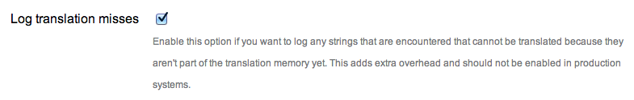
-
Click "Save"
See also ??? for further instructions on enabling string capturing.
Once you have string capturing enabled, you can just load any of the pages in your proxy site (i.e. the translated version of the website) and any strings for which there is no translation will be automatically be added to the "Strings" tab so that you can translate them.
Translating Strings
There are 3 primary ways to translate strings in SWeTE:
Exporting Strings and Translations
If your translator prefers to use his own CAT (computer assisted translation) tool for translating site content you will need to export the strings you wish to have translated to an external file format. SWeTE allows you to export in CSV (comma-separated value) and XLIFF (XML Localisation Interchange File Format). Your choice of format will depend on the tool-chain you and your translator intend to use. CSV is handy because it is simple. It can be opened and edited by any spread-sheet program.
XLIFF is an XML-based format created to standardize the way localizable data are passed between tools during the localization process. The problem with XLIFF is that it isn’t yet fully supported by many of the most popular CAT tools. SWeTE uses XLIFF standard placeholder tags in place of HTML tags that may be embedded in its strings and translations. These placeholders need to be maintained throughout the translation process if you want to be able to import the resulting translations back into SWeTE and have them "work" properly. If your CAT tool only supports XLIFF as an import source and export target, then these tags are likely to get lost in translation (pardon the pun). Even if the CAT tool is advertised to work with XLIFF natively it may not support the full specification, and thus may strip out these special tags.
Warning
Before you commit to a translation workflow, make sure you test out the round-trip process with a small set of translations before you proceed with the bulk of the work. There is nothing worse than receiving a corrupted file from a translator, and having to paste the translations back into SWeTE one-by-one.
Exporting Strings as CSV
Exporting strings to CSV format is quite simple. In the "Strings" tab, you can just perform a search for the subset of strings that you want to export. Once you are happy with your found set, simply select "Export" > "Export CSV".
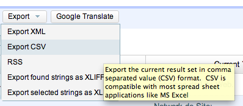
This will cause a CSV file named "translation_miss_log_results_xxxx.csv" to be downloaded to your browser.
Note
For large found sets it may take some time to generate and download the CSV file. You will need to be patient.
The format of this file is exactly the same format that is required by the Import CSV form. You can open this file in any spreadsheet program (e.g. MS Excel, Open Office, etc..).
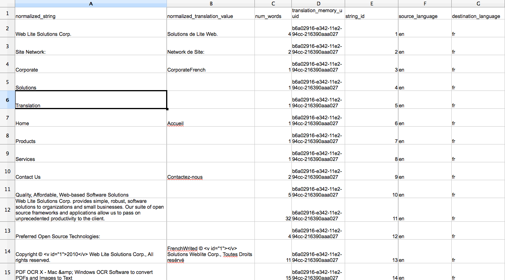
Notice that the first row serves as the field names. These correspond exactly with the field names in the translation_miss_log table of the database. The exact columns are as follows:
| Field Name | Description |
|---|---|
normalized_string |
The source string normalized and encoded so that all HTML tags are replaced with the appropriate |
normalized_translation_value |
The current translation (may be blank) for the string normalized and encoded so that HTML tags are replaced with the appropriate |
num_words |
The number of words in the source string. |
translation_memory_uuid |
The UUID (universal ID) of the translation memory to which the string belongs. |
string_id |
The string ID of the string within the xf_tm_strings table. Two strings which are identical should share the same string ID. (i.e. Strings are immutable). |
source_language |
The language code of the source language of the string. (E.g. en for English, fr for French, etc…). |
destination_language |
The language code of the translation language. (e.g. en for English, fr for French, etc…). |
webpage_id |
Not used currently. |
request_url |
If the string was captured from a particular web page, the URL to this page may be here. The URL reflects the URL within the proxy site, not the source site. This may be blank if the string was inserted by some other method. |
website_id |
The website ID to which this string belongs. |
date_inserted |
The date that the string was inserted. |
Sample CSV File
You can view a sample exported CSV file in the docs/samples/translation_miss_log_results_2013_07_05_00_11_28.csv file with the SWeTE distribution. You can also view it here on github.
Exporting Strings as XLIFF
XLIFF is also a viable method of getting strings and translations in and out of SWeTE. There are three variations of exporting to XLIFF:
-
Export Found Strings to XLIFF. This option is used in the "Strings" tab to export the entire current found set as an XLIFF file.
-
Export Selected Strings to XLIFF. This option, also used in the "Strings" tab, is used to export only those strings that have been checked the list of strings.
-
Export Translation Memory as XLIFF. This option will export an entire translation memory as an XLIFF file. This is handy if you want to back up a translation memory, or to copy a translation memory from one site to another.
Exporting Found Strings as XLIFF
The "Strings" tab provides a lot of flexibility in the way of filtering and sorting strings and translation. You can search for keywords, or strings that were inserted on a particular date or in a date range. You can even search for strings for which there is no translation, or where the number of words in the source in in a particular range. Once you have found the strings that you want to export, you can select "Export" > "Export found strings as XLIFF". This will cause your browser to download an XLIFF file including all of the strings in the current found set along with their associated translations.
Note
Support for XLIFF files varies across CAT tools. Currently OmegaT is the only tool that has been tested and verified to fully support the XLIFF files produced by SWeTE without corrupting them or causing data loss.
Exporting Selected Strings as XLIFF
In cases where you just want to select a few specific strings to export as XLIFF, you can use the "Export Selected Strings as XLIFF" option. To use this option, simply check the box beside each string that you want to include in the XLIFF file, then select "Export" > "Export Selected Strings as XLIFF".
Exporting A Translation Memory as XLIFF
A third way to produce an XLIFF file is to export a full translation memory. You can do this by:
-
Click on the "Translation Memories" tab.
-
Click on the translation memory that you wish to export.
-
Click on "Export" > "Export XLIFF" on the top button bar.
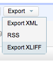
The resulting XLIFF file will contain all of strings (which have translations) in the translation memory.
Note
You may notice that translation memories only contain strings that have been translated. This contrasts the strings as seen in the "Strings" tab, which includes all strings that have been imported into the system, whether they have been translated or not.
Importing Strings and Translations
In order to provide a workflow between external CAT tools and SWeTE, you must be able to re-import the files that had previously been exported - but have had translations added to them. SWeTE supports importing of both CSV and XLIFF files as long as they are in the same format as SWeTE produces in its export operations.
Importing Translations from a CSV File
CSV is one of the simplest, most reliable formats for transferring translations. SWeTE accepts CSV files as long as they are in the same format as as SWeTE uses for exporting CSV files. The strings need to be fully-encoded, with HTML tags replaced with the appropriate SWeTE placeholders. In order for the strings to be useful, they must be in a format consistent with a preprocessed string from the proxy site. In order to understand this, it may help to quickly review how SWeTE processes web pages.
When a request is made for a web page in SWeTE, it first loads the webpage from the source site. Then it passes the page contents through a set of prefilters to prepare the page to be processed by the translation parser. Finally, just before each string is passed to the translation parser, it replaces all HTML tags with placeholder tags so that strings with different HTML tags but in the same place will match. These placeholders are:
-
<g id="n">xxx</g>, for HTML tags that have both an opening and closing tag. E.g. [I am <a href="foobar.html">Steve</a>] would be converted to [I am <g id="1">Steve</g>]. [We are <a href="foobar.html">Steve</a> and <a href="foobar2.html">Jack</a>] would be converted to [We are <g id="1">Steve</g> and <g id="2">Jack</g>]. -
<x id="n"/>, for HTML tags that don’t have a closing tag. E.g. [I am Steve <br/> and this <br/> is Jack] would be converted to [I am Steve <x id="1"/> and this <x id="2"/> is Jack]. -
<v id="n"></v>, to mark variables, i.e. HTML tags that include the data-swete-translate attribute. See ??? for more information about data-swete-translate and inline variables. The default website profile includes a number of text filters wrap replace numbers and dates in these inline variable tags.
Due to these transformations, it is safest to only work with strings that have already been captured by SWeTE using the string capture step (See Capturing Strings for more information on capturing strings), and exported using the export CSV step. If you have a raw CSV file with strings that you want to import from a database or external corpus you should build a web page with this CSV file and capture the page using SWeTE. (In future versions there may be an import path without having to do this, but for now, it is the safest method of importing raw strings).
Steps to import a set of translations from a CSV file.
-
Click on the "Strings" tab on the top menu bar.
-
Click on the "Import Translations" button on the left menu bar.
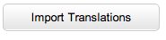
-
This will show a form to upload your CSV file as follows:
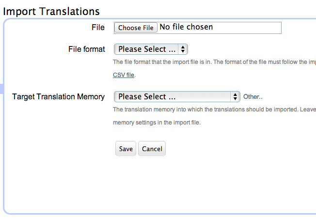
-
Use the "File" field to select the CSV file that contains your translations.
Note
It should be in the same format as SWeTE exports. The top row must contain the column names exactly as they are included in the SWeTE CSV export option. See title_title for details about the required columns. You can view a sample exported CSV file in the docs/samples/translation_miss_log_results_2013_07_05_00_11_28.csv file with the SWeTE distribution. You can also view it here on github.
-
Select "CSV" in the "File Format" field.
-
If you want to target a specific translation memory into which to insert all translations, then select that translation memory in the "Target Translation Memory" field. If you do not select a translation memory, it will use the translation_memory_uuid column of the CSV file to identify the translation memory to which the string belongs, and try to use it. If the system doesn’t have a matching translation memory, then it will fail to import that string.
-
Click Save when you are done.